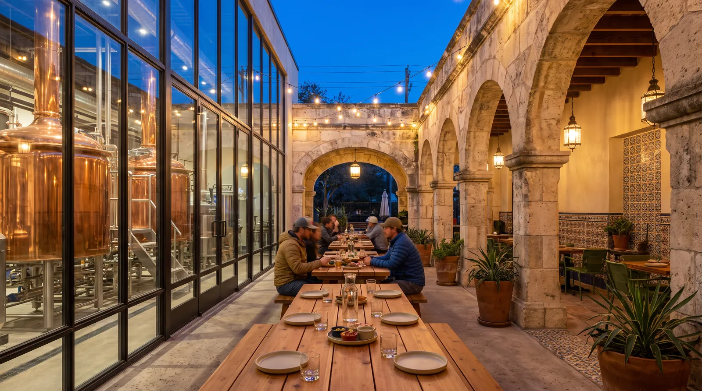

The space
From the street
to the court.
A quiet front of pale limestone, steel and cedar opens into shade, long tables and a view of the tanks.

The terrace
A brewery you walk into.
A court you walk out to. The future space brings the kitchen, the bar and the brewing equipment into view from the table.